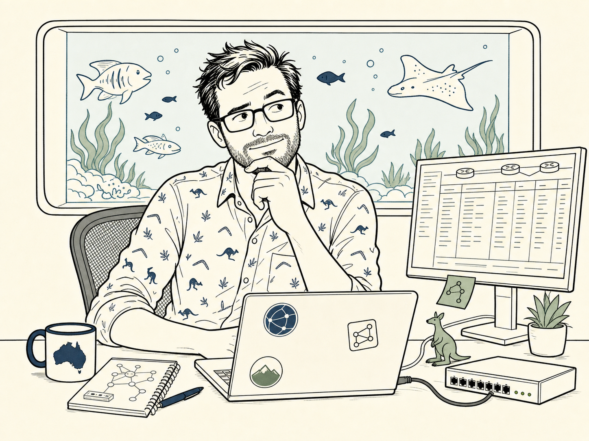
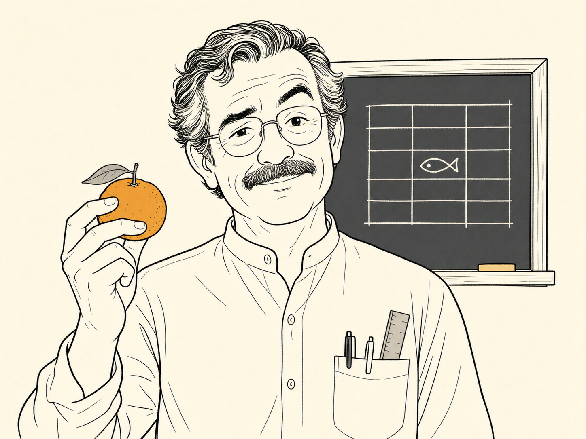
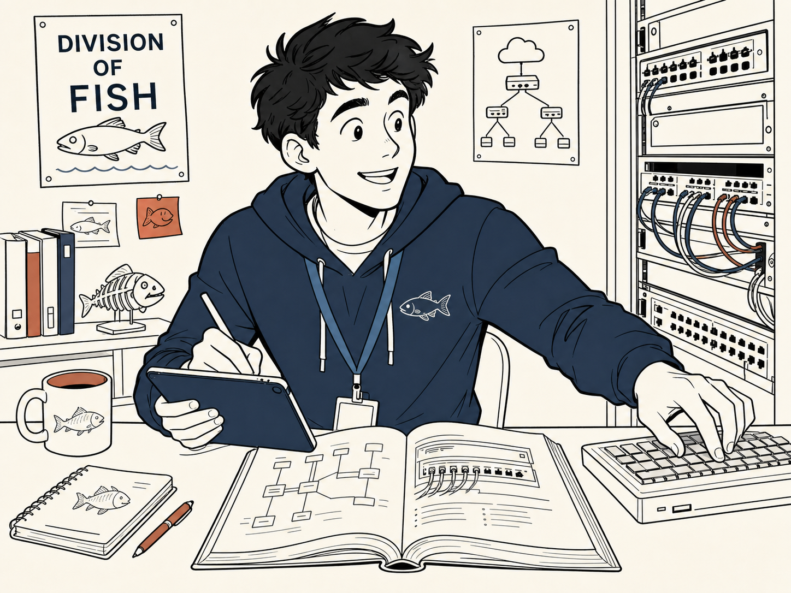
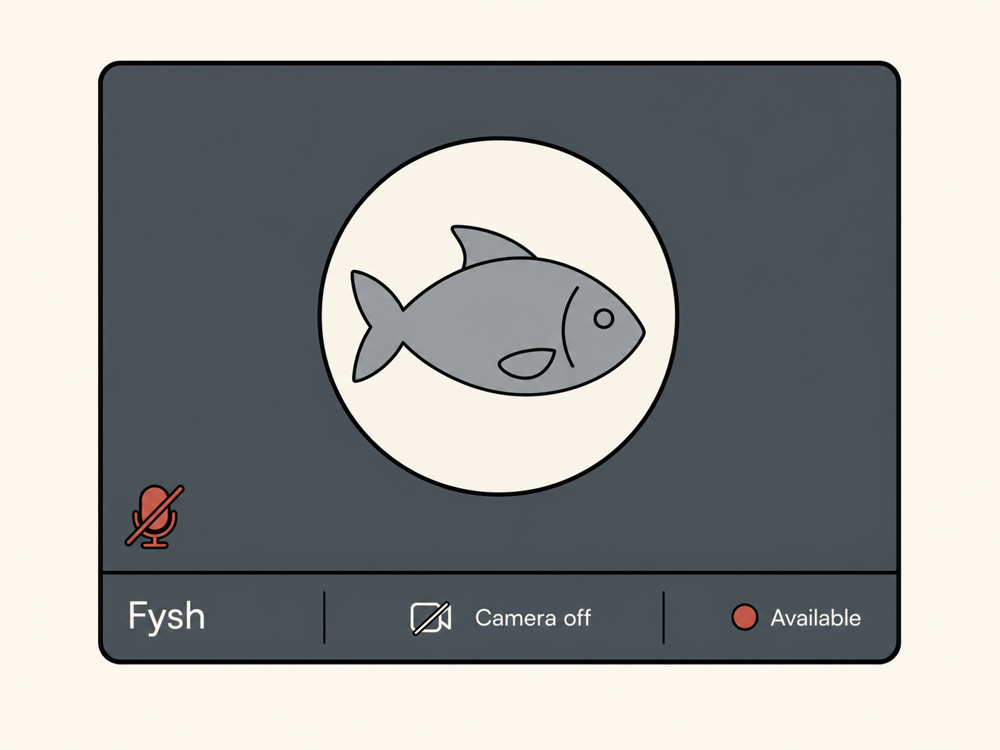

Core Trio
Samwise, Señor Gonzalez and Junior appear in every episode.
images/prompts.txt.Not a complete beginner. Understands general networking, is still developing Fortinet depth, troubleshooting discipline and architectural judgement. Teaching Junior is how Samwise proves mastery.

images/prompts.txt.Rule: he may present the point in a ridiculous way, but the engineering point underneath must be correct.
- Creates memorable analogies.
- Notices missing evidence.
- Occasionally says the exact exam answer between two terrible puns.

images/prompts.txt.Changes several variables at once, assumes green means fully healthy, and treats one successful stage as proof of end-to-end success. Junior's mistakes expose common exam traps without making him look incompetent.
Recurring specialist
Appears when the evidence is ambiguous or the team is about to change something without proving the cause.images/prompts.txt.Calm, precise, difficult to impress. She doesn't solve every problem. Instead, she asks the uncomfortable question that reveals the team's missing assumption — then goes back to her notebook.
- The evidence is ambiguous.
- A short-term fix creates architectural risk.
- The team needs to separate incident containment from root-cause analysis.
Unseen executive
Provide contradictory clues but never confirm Fysh's identity.
images/prompts.txt.Appears only in Teams. Never turns on the camera. Uses a fish silhouette as the profile icon. Issues broad, deadline-heavy instructions. Has never been observed entering or leaving a building. Nobody agrees on whether Fysh is a surname, title, shared executive account, AI, or an actual fish with excellent delegation skills.